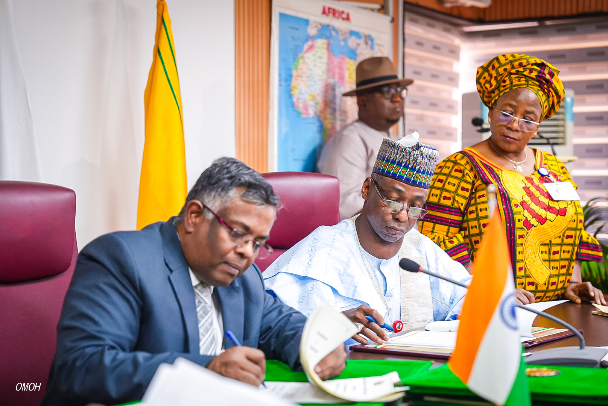
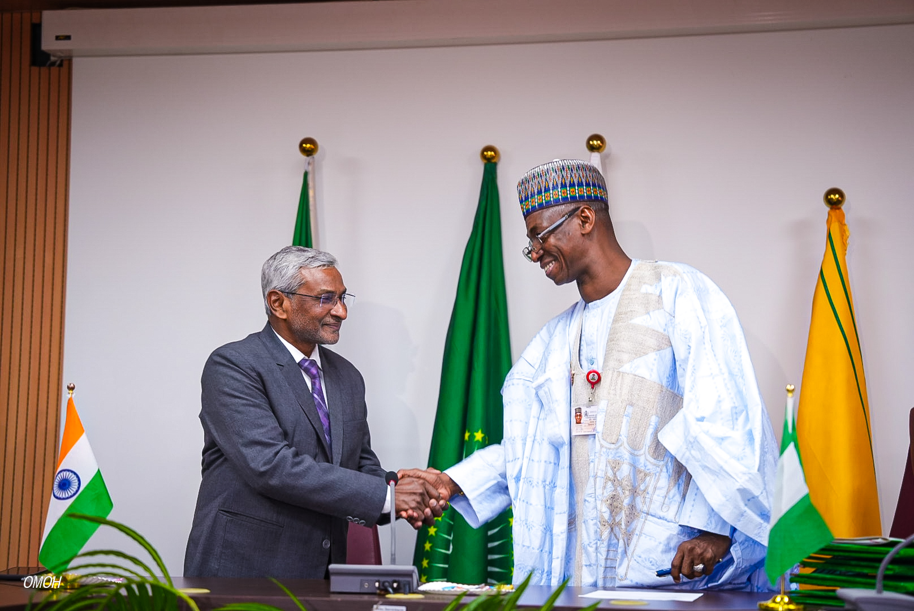

Quick Facts
| Name: | Dr. Dunoma Umar Ahmed, PhD |
| Bio: | Seasoned public administrator and strategic leader serving as Permanent Secretary of the Ministry of Foreign Affairs of the Federal Republic of Nigeria. |
| Born: | October 15, 1968 (Maiduguri, Borno State) |
| Education: | University of Maiduguri (B.Sc. & M.Sc.); University of Abuja (PhD) |
| Sworn In: | July 2024 |
| Speaks: | English, Hausa, Arabic |
Dr. Dunoma Umar Ahmed is a seasoned public administrator and strategic leader currently serving as the Permanent Secretary of the Ministry of Foreign Affairs of the Federal Republic of Nigeria.
With decades of experience across key government ministries and departments, he brings a wealth of institutional knowledge, policy coordination expertise, and reform-oriented leadership to Nigeria's diplomatic administration.
A holder of a PhD from the University of Abuja and advanced degrees from the University of Maiduguri, Dr. Ahmed exemplifies the calibre of highly qualified civil servants who anchor the Federal Government's public service, and whose academic background in public administration is matched by extensive practical experience at the highest levels of government.
Since his assumption of office in July 2024, Dr. Ahmed has focused on strengthening the Ministry's internal administrative systems, improving the efficiency of consular and passport services, and enhancing coordination between Ministry headquarters and Nigeria's global network of diplomatic missions.

Learn more about the Ministry's administrative structure, departments and the services available to Nigerians and the international community.

Nigeria is a significant player on the international stage, maintaining a vast network of diplomatic missions worldwide.
See More